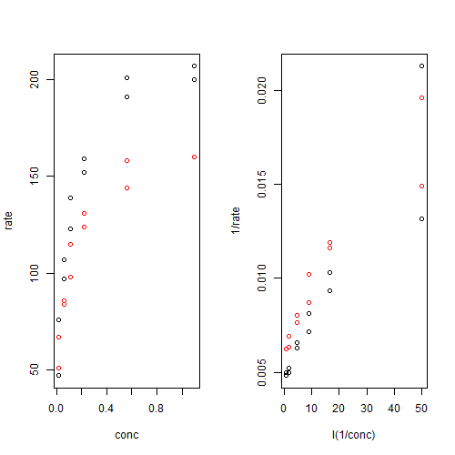

[1] "2012-06-01 13:53:16"
> head(Puromycin)
conc rate state
1 0.02 76 treated
2 0.02 47 treated
3 0.06 97 treated
4 0.06 107 treated
5 0.11 123 treated
6 0.11 139 treated
> par(mfrow = c(1, 2))
> plot(rate ~ conc, data = Puromycin, col = as.numeric(state))
> plot(1/rate ~ I(1/conc), data = Puromycin, col = as.numeric(state))

> m1 <- lm(1/rate ~ state + I(1/conc) + state * I(1/conc), data = Puromycin)
> summary(m1)
Call:
lm(formula = 1/rate ~ state + I(1/conc) + state * I(1/conc),
data = Puromycin)
Residuals:
Min 1Q Median 3Q Max
-0.0043103 -0.0004563 -0.0001604 0.0009239 0.0038084
Coefficients:
Estimate Std. Error t value Pr(>|t|)
(Intercept) 5.107e-03 6.273e-04 8.141 1.29e-07 ***
stateuntreated 1.865e-03 9.201e-04 2.027 0.0569 .
I(1/conc) 2.472e-04 2.861e-05 8.642 5.23e-08 ***
stateuntreated:I(1/conc) -3.222e-05 4.101e-05 -0.786 0.4418
---
Signif. codes: 0 ‘***’ 0.001 ‘**’ 0.01 ‘*’ 0.05 ‘.’ 0.1 ‘ ’ 1
Residual standard error: 0.001686 on 19 degrees of freedom
Multiple R-squared: 0.8757, Adjusted R-squared: 0.8561
F-statistic: 44.61 on 3 and 19 DF, p-value: 8.508e-09